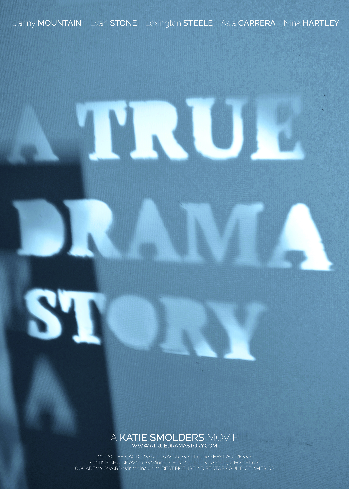
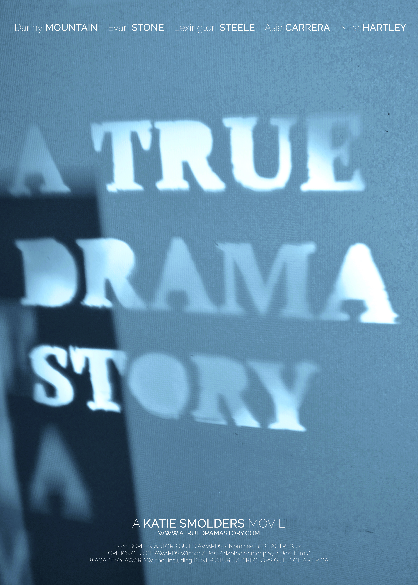

Portfolio 2018-2019
Katie Smolders

About me
Ik ben Katie smolders en studeer Grafische en digitale media aan de AP hogeschool te antwerpen. Ik ben 19 jaar oud en ben graag enorm creatief bezig. Hier is mijn portfoliosite met een paar van mijn favoriete werken. Van Grafisch design tot Oriëterend project. Enjoy!


A true drama story
Read moreAwoetaboe
Read all about itThank you for viewing my website!
Contact
katie.smolders@gmail.com
+32 498 29 54 99
Wilgenstraat 6, 2950 Kapellen


 
